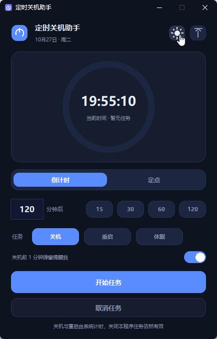

该休息时，让它替你关机
Shutdown Timer for Windows — 单文件 · 免安装 · 双击即用 · 8 种语言
Windows 10 / 11 · 约 30 MB · 无需安装 Python

为「睡前挂机」而生
下载电影、挂机游戏、跑完任务……设一个时间，安心去睡。
⏱
倒计时 / 定点
30 分钟后关机，或每天定点 23:00 执行，快捷时间一键填入。
⏻
关机 · 重启 · 休眠
三种任务类型。关机与重启由系统计时，关掉程序任务依然有效。
🔔
执行前提醒
执行前 1 分钟右下角弹窗，可取消、可推迟 10 分钟，不怕误关。
🌍
8 种语言
中英法俄西阿繁拉丁，一键切换，分享给世界各地的朋友。
🌙
深 / 浅主题
深夜不刺眼的暗色界面，配环形进度倒计时，窗口置顶随时看剩余时间。
📦
单文件免安装
一个 exe 走天下，不写注册表、不留垃圾文件，删除即卸载。
简体中文EnglishFrançais
РусскийEspañolالعربية
繁體中文Latina